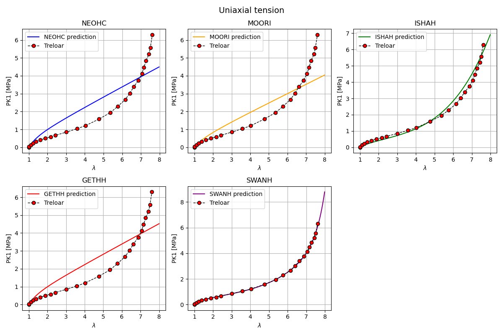
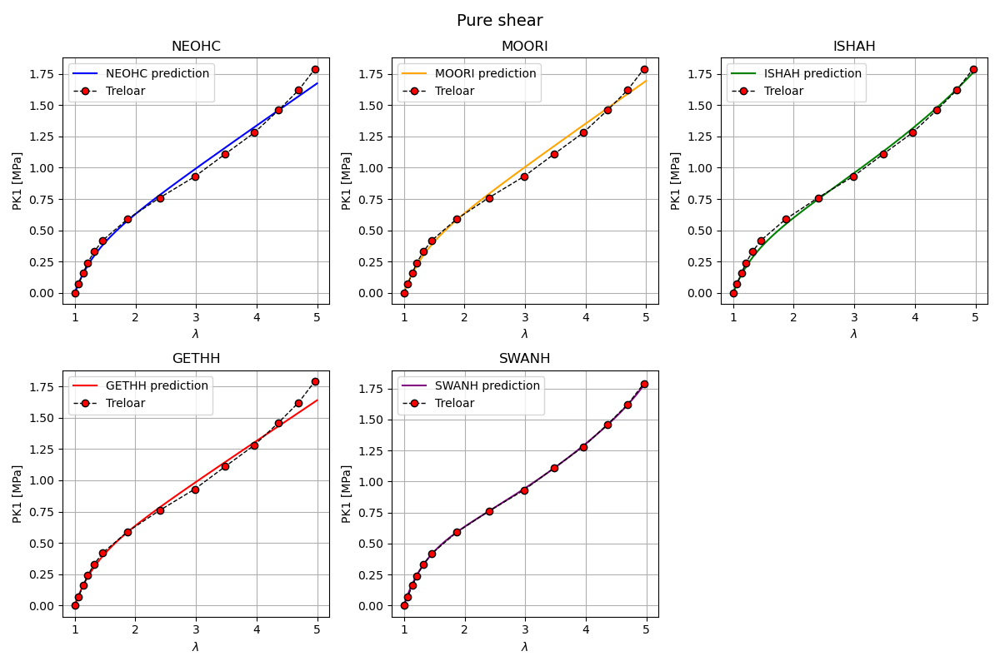
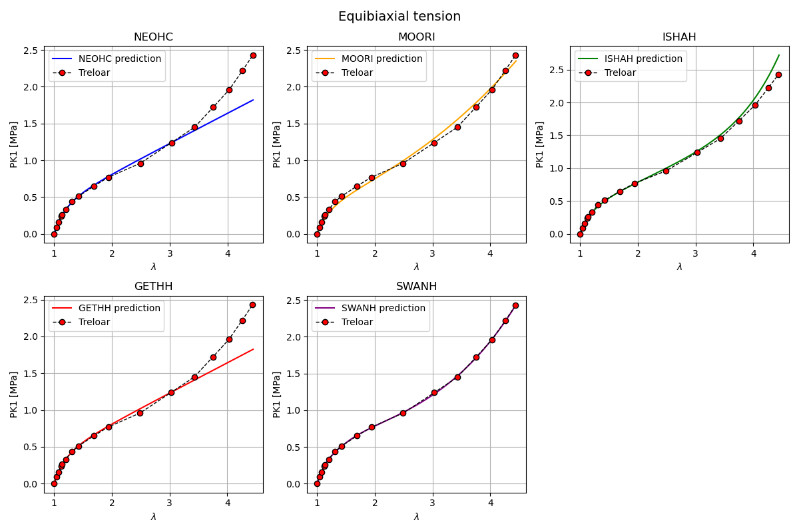

Note
Go to the end to download the full example code.
Hyperelastic models - use the umat
In this example, we compare five hyperelastic constitutive laws. Each model is run for uniaxial tension (UT), equibiaxial tension (ET), and pure shear (PS).
We present one section per model.
# sphinx_gallery_thumbnail_number = 1
import numpy as np
import pandas as pd
from simcoon import simmit as sim
import matplotlib.pyplot as plt
import os
from typing import NamedTuple, List, Tuple
from dataclasses import dataclass
Several hyperelastic isotropic materials are tested. They are compared to the well-know Traloar experimental data The following model are tested
The Neo-Hookean model
The Mooney-Rivlin model
The Isihara model
The Gent-Thomas model
The Swanson model
Considering the Neo-Hookean model, the strain energy function is expressed as:
The parameters are: 1. The shear coefficient \(\mu\), 2. The bulk compressibility \(\kappa\),
Considering the Mooney-Rivlin model, the strain energy function is expressed as:
The parameters are: 1. The first governing parameter \(c_{10}\), 2. The second governing parameter \(c_{01}\), 3. The bulk compressibility \(\kappa\),
Considering the Isihara model, the strain energy function is expressed as:
The parameters are: 1. The first governing parameter \(c_{10}\), 2. The second governing parameter \(c_{20}\), 3. The third governing parameter \(c_{01}\), 4. The bulk compressibility \(\kappa\),
Considering the Gent-Thomas model, the strain energy function is expressed as:
The parameters are: 1. The first governing parameter \(c_{1}\), 2. The second governing parameter \(c_{2}\), 3. The third governing parameter \(c_{01}\), 4. The bulk compressibility \(\kappa\),
Considering the Swanson model, the strain energy function is expressed as:
The parameters are, 1. The size of the series \(n\), 2. The bulk compressibility \(\kappa\), Then for each serie \(i\): 1. The first shear modulus \(A_{i}\), 2. The second shear modulus \(B_{i}\), 3. The first exponent \(\alpha_{i}\), 4. The second exponent \(\beta_{i}\),
- Data structures for material models and loading cases
In this section we define two small helper structures used throughout the example to organize material parameters and the data associated with each loading case.
Umatis a simple dataclass that stores information about one material model. It contains:name: the identifier of the material model (e.g., “neo_hookean”),parameters: a list of numerical parameters for the constitutive model,colors: a plotting color or style string used when visualizing results.
loading_caseis a NamedTuple describing one deformation or test scenario. It contains:name: a short label for the loading type (e.g. “uniaxial”),pathfile: the file path where the analytical or numerical results for this loading case are stored,comparison: a list of tuples, each holding two pandas Series (typically experimental vs analytical stress–stretch data) that can be plotted or analyzed together.
These lightweight structures help keep the code clean and make the processing and comparison loops later in the example more readable.
@dataclass
class Umat:
name: str
parameters: List[float]
colors: str
class loading_case(NamedTuple):
name: str
pathfile: str
comparison: List[Tuple[pd.Series, pd.Series]]
- Reading experimental and analytical Treloar data
This example demonstrates how to load two datasets used for comparing experimental results with analytical predictions of the Treloar model.
The data files are stored in the
comparisondirectory:Treloar.txtcontains experimental measurements from Treloar’s classical rubber elasticity experiments. Each row lists the principal stretch ratios (lambda_1, lambda_2, lambda_3) together with the corresponding measured stresses (P1_MPa, P2_MPa, P3_MPa).
The files are space-separated, so
pandas.read_csvis instructed to use a whitespace separator (sep=r"\s+"). The column names are supplied explicitly because the files contain header lines that we ignore withheader=0. Each dataset is read into its own pandas DataFrame for further processing and comparison in later sections.
path_data = "comparison"
comparison_file_exp = "Treloar.txt"
comparison_exp = path_data + "/" + comparison_file_exp
df_exp = pd.read_csv(
comparison_exp,
sep=r"\s+",
engine="python",
names=["lambda_1", "P1_MPa", "lambda_2", "P2_MPa", "lambda_3", "P3_MPa"],
header=0,
)
- Defining the material models used for comparison
In this section we instantiate several hyperelastic material models using the
Umatdataclass defined earlier. Each model is characterized by:a short
nameidentifying the constitutive law,a list of
parameterscorresponding to that model’s formulation,a
colorsentry used later when plotting the analytical curves.
The examples below include several well-known hyperelastic models:
Neo-Hookean (NEOHC): defined by two parameters [mu, kappa].
Mooney–Rivlin (MOORI): uses three parameters (typically C10, C01, and bulk modulus).
Isihara (ISHAH): a model with four parameters.
Gent–Thomas (GETHH): includes limiting-chain extensibility effects.
Swanson (SWANH): a higher-order model with multiple coefficients.
These material models are collected into the list
list_umatsfor convenient iteration in later sections.
Neo_Hookean_model = Umat(name="NEOHC", parameters=[0.5673, 1000.0], colors="blue")
Mooney_Rivlin_model = Umat(
name="MOORI", parameters=[0.2588, -0.0449, 10000.0], colors="orange"
)
Isihara_model = Umat(
name="ISHAH", parameters=[0.1161, 0.0136, 0.0114, 4000.0], colors="green"
)
Gent_Thomas_model = Umat(
name="GETHH", parameters=[0.2837, 2.81e-11, 4000.0], colors="red"
)
Swanson_model = Umat(
name="SWANH",
parameters=[
2,
4000.0,
2.83e-3,
1.871e-13,
1.684,
-0.4302,
2.82e-13,
0.4643,
9.141,
0.7882,
],
colors="purple",
)
list_umats = [
Neo_Hookean_model,
Mooney_Rivlin_model,
Isihara_model,
Gent_Thomas_model,
Swanson_model,
]
- Defining the loading cases for comparison
Here we create the different deformation modes used to compare the experimental Treloar data with the analytical predictions.
Each loading case is represented by a
loading_caseNamedTuple that contains:name: a short identifier for the deformation mode,pathfile: the file describing the deformation path (used later for analytical evaluations),comparison: a list of pairs of pandas Series, typically (experimental data, analytical data), for the stress component that corresponds to this loading mode.
The three classical Treloar tests included here are:
- Uniaxial tension (UT)
Uses the stretch λ₁ and the corresponding stress component P₁.
- Pure shear (PS)
Uses the stretch λ₂ and stress P₂.
- Equi-biaxial tension (ET)
Uses the stretch λ₃ and stress P₃.
These loading cases are gathered into the list
loading_casesfor convenient iteration in subsequent plotting or evaluation steps.
Uniaxial_tension = loading_case(
name="UT",
pathfile="path_UT.txt",
comparison=[
(df_exp["lambda_1"], df_exp["P1_MPa"]),
],
)
Pure_shear = loading_case(
name="PS",
pathfile="path_PS.txt",
comparison=[
(df_exp["lambda_2"], df_exp["P2_MPa"]),
],
)
Equi_biaxial_tension = loading_case(
name="ET",
pathfile="path_ET.txt",
comparison=[
(df_exp["lambda_3"], df_exp["P3_MPa"]),
],
)
loading_cases = [Uniaxial_tension, Pure_shear, Equi_biaxial_tension]
- Plot each model separately
For each hyperelastic model, we create one figure with five subplots: Neo-Hookean, Mooney-Rivlin, Isihara, Gent-Thomas, and Swanson. Treloar experimental data are plotted for comparison.
models_to_plot = ["NEOHC", "MOORI", "ISHAH", "GETHH", "SWANH"]
model_colors = {
"NEOHC": "blue",
"MOORI": "orange",
"ISHAH": "green",
"GETHH": "red",
"SWANH": "purple",
}
- Plot hyperelastic models in uniaxial tension
In this section, the response of several hyperelastic material models is evaluated under uniaxial tension and compared against Treloar’s experimental data.
For each constitutive model contained in
list_umats, the following steps are performed:The model-specific material parameters are retrieved from the
umatobject.A uniaxial loading path is prescribed using the loading history stored in
path_UT.txt.The constitutive response is computed by calling the solver interface, which evaluates the Cauchy stress as a function of the applied stretch.
The solver output (i.e, stretch and Nominal stress) is read from the generated result files and the axial Cauchy stress component is extracted.
The numerical prediction is plotted together with the corresponding experimental data from Treloar for direct visual comparison.
Each subplot corresponds to a single material model. The resulting figure provides a qualitative assessment of the ability of each model to reproduce the uniaxial tension behavior observed experimentally.
fig, axes = plt.subplots(2, 3, figsize=(12, 8))
axes = axes.flatten()
for i, umat in enumerate(list_umats):
# Retrieve model parameters for this loading case
params = umat.parameters
# Solver input
psi_rve = 0.0
theta_rve = 0.0
phi_rve = 0.0
solver_type = 0
corate_type = 2
nstatev = 1
# File paths
path_data = "data"
path_results = "results"
pathfile = "path_UT.txt"
outputfile = f"results_{umat.name}.txt"
# Run simulation
sim.solver(
umat.name,
params,
nstatev,
psi_rve,
theta_rve,
phi_rve,
solver_type,
corate_type,
path_data,
path_results,
pathfile,
outputfile,
)
# Load solver output
outputfile_macro = os.path.join(path_results, f"results_{umat.name}_global-0.txt")
lam, PK1_11 = np.loadtxt(outputfile_macro, usecols=(10, 11), unpack=True)
# Plot model prediction
axes[i].plot(
lam,
PK1_11,
color=model_colors[umat.name],
label=f"{umat.name} prediction",
)
# Plot Treloar experimental data
axes[i].plot(
Uniaxial_tension.comparison[0][0],
Uniaxial_tension.comparison[0][1],
linestyle="--",
marker="o",
color="black",
lw=1,
markerfacecolor="red",
markeredgecolor="black",
label="Treloar",
)
# Formatting
axes[i].set_xlabel(r"$\lambda$")
axes[i].set_ylabel("PK1 [MPa]")
axes[i].set_title(umat.name)
axes[i].grid(True)
axes[i].legend()
fig.suptitle(f"Uniaxial tension", fontsize=14)
fig.delaxes(axes[5])
fig.tight_layout()
plt.legend()
plt.show()

- Plot hyperelastic models in pure shear
In this section, the response of several hyperelastic material models is evaluated under pure shear and compared against Treloar’s experimental data.
For each constitutive model contained in
list_umats, the following steps are performed:The model-specific material parameters are retrieved from the
umatobject.A uniaxial loading path is prescribed using the loading history stored in
path_PS.txt.The constitutive response is computed by calling the solver interface, which evaluates the Cauchy stress as a function of the applied stretch.
The solver output (i.e, stretch and Nominal stress) is read from the generated result files and the axial Cauchy stress component is extracted.
The numerical prediction is plotted together with the corresponding experimental data from Treloar for direct visual comparison.
Each subplot corresponds to a single material model. The resulting figure provides a qualitative assessment of the ability of each model to reproduce the pure shear behavior observed experimentally.
Neo_Hookean_model.parameters = [0.3360, 1000.0]
Mooney_Rivlin_model.parameters = [0.2348, -0.065, 10000.0]
Isihara_model.parameters = [0.1601, 0.0037, 0.0031, 4000.0]
Gent_Thomas_model.parameters = [0.1629, 0.0376, 4000.0]
Swanson_model.parameters = [
2,
4000.0,
0.0676,
0.2861,
0.2687,
-0.4683,
3.266e-11,
0.0267,
9.131,
0.7157,
]
fig, axes = plt.subplots(2, 3, figsize=(12, 8))
axes = axes.flatten()
for i, umat in enumerate(list_umats):
# Retrieve model parameters for this loading case
params = umat.parameters
# Solver input
psi_rve = 0.0
theta_rve = 0.0
phi_rve = 0.0
solver_type = 0
corate_type = 2
nstatev = 1
# File paths
path_data = "data"
path_results = "results"
pathfile = "path_PS.txt"
outputfile = f"results_{umat.name}.txt"
# Run simulation
sim.solver(
umat.name,
params,
nstatev,
psi_rve,
theta_rve,
phi_rve,
solver_type,
corate_type,
path_data,
path_results,
pathfile,
outputfile,
)
# Load solver output
outputfile_macro = os.path.join(path_results, f"results_{umat.name}_global-0.txt")
lam, PK1_11 = np.loadtxt(outputfile_macro, usecols=(10, 11), unpack=True)
# Plot model prediction
axes[i].plot(
lam,
PK1_11,
color=model_colors[umat.name],
label=f"{umat.name} prediction",
)
# Plot Treloar experimental data
axes[i].plot(
Pure_shear.comparison[0][0],
Pure_shear.comparison[0][1],
linestyle="--",
marker="o",
color="black",
lw=1,
markerfacecolor="red",
markeredgecolor="black",
label="Treloar",
)
# Formatting
axes[i].set_xlabel(r"$\lambda$")
axes[i].set_ylabel("PK1 [MPa]")
axes[i].set_title(umat.name)
axes[i].grid(True)
axes[i].legend()
fig.suptitle(f"Pure shear", fontsize=14)
fig.delaxes(axes[5])
fig.tight_layout()
plt.legend()
plt.show()

- Plot hyperelastic models in equibiaxal tension
In this section, the response of several hyperelastic material models is evaluated under equibiaxial tension and compared against Treloar’s experimental data.
For each constitutive model contained in
list_umats, the following steps are performed:The model-specific material parameters are retrieved from the
umatobject.A uniaxial loading path is prescribed using the loading history stored in
path_ET.txt.The constitutive response is computed by calling the solver interface, which evaluates the Cauchy stress as a function of the applied stretch.
The solver output (i.e, stretch and Nominal stress) is read from the generated result files and the axial Cauchy stress component is extracted.
The numerical prediction is plotted together with the corresponding experimental data from Treloar for direct visual comparison.
Each subplot corresponds to a single material model. The resulting figure provides a qualitative assessment of the ability of each model to reproduce the equibiaxial tension behavior observed experimentally.
Neo_Hookean_model.parameters = [0.4104, 1000.0]
Mooney_Rivlin_model.parameters = [0.1713, 0.0047, 10000.0]
Isihara_model.parameters = [0.1993, 0.0015, 0.0013, 4000.0]
Gent_Thomas_model.parameters = [0.2052, 2.22e-14, 4000.0]
Swanson_model.parameters = [
2,
4000.0,
0.21,
0.1036,
-1833.0,
-6.634,
0.0074,
0.266,
1.429,
-0.623,
]
fig, axes = plt.subplots(2, 3, figsize=(12, 8))
axes = axes.flatten()
for i, umat in enumerate(list_umats):
# Retrieve model parameters for this loading case
params = umat.parameters
# Solver input
psi_rve = 0.0
theta_rve = 0.0
phi_rve = 0.0
solver_type = 0
corate_type = 2
nstatev = 1
# File paths
path_data = "data"
path_results = "results"
pathfile = "path_ET.txt"
outputfile = f"results_{umat.name}.txt"
# Run simulation
sim.solver(
umat.name,
params,
nstatev,
psi_rve,
theta_rve,
phi_rve,
solver_type,
corate_type,
path_data,
path_results,
pathfile,
outputfile,
)
# Load solver output
outputfile_macro = os.path.join(path_results, f"results_{umat.name}_global-0.txt")
lam, PK1_11 = np.loadtxt(outputfile_macro, usecols=(10, 11), unpack=True)
# Plot model prediction
axes[i].plot(
lam,
PK1_11,
color=model_colors[umat.name],
label=f"{umat.name} prediction",
)
# Plot Treloar experimental data
axes[i].plot(
Equi_biaxial_tension.comparison[0][0],
Equi_biaxial_tension.comparison[0][1],
linestyle="--",
marker="o",
color="black",
lw=1,
markerfacecolor="red",
markeredgecolor="black",
label="Treloar",
)
# Formatting
axes[i].set_xlabel(r"$\lambda$")
axes[i].set_ylabel("PK1 [MPa]")
axes[i].set_title(umat.name)
axes[i].grid(True)
axes[i].legend()
fig.suptitle(f"Equibiaxial tension", fontsize=14)
fig.delaxes(axes[5])
fig.tight_layout()
plt.legend()
plt.show()

Total running time of the script: (0 minutes 1.983 seconds)